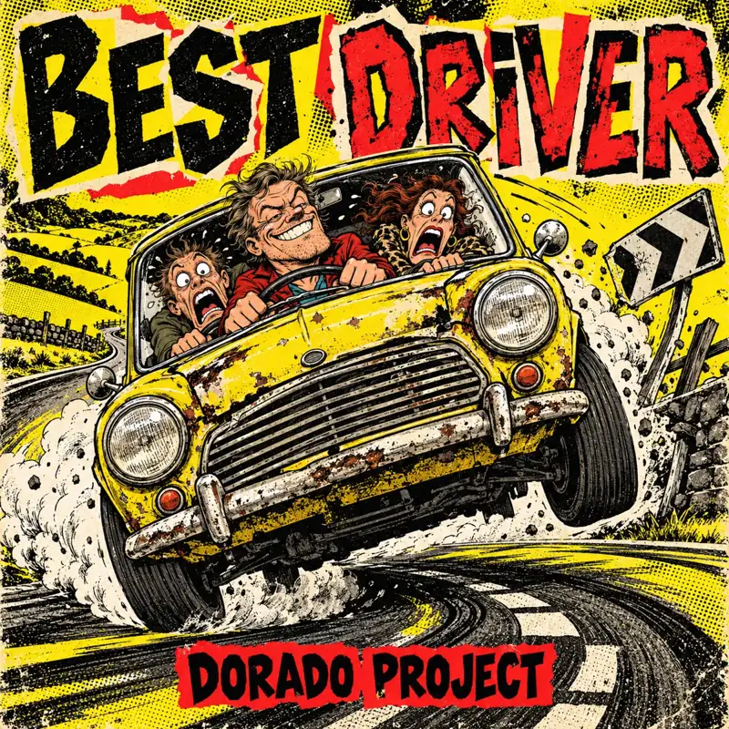

← All releases

NEW SINGLE · IN PRODUCTION
Best Driver
Punk rock / Comic punk
Best Driver by Dorado Project: an English-language comic punk song about Peter, an overconfident driver whose terrified passengers would rather walk.
Spotify link to follow when the track is available.
Peter at the wheel
A tongue-in-cheek, exaggerated driving nightmare: Peter declares himself the best driver in the world while his passengers cling to the dashboard. Best Driver was written for frantic punk guitars, raw male vocals, rowdy gang responses and a melodic guitar solo, with a gradual fade-out. The joke is the gap between his unshakable confidence and the chaos around him. The song contains explicit language.
More from Dorado Project
From synthpop to rock: explore more tracks and the story behind Dorado Project.
Explore all tracks →